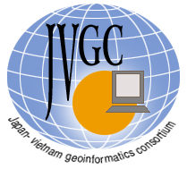

|
 |
International Symposium on Geoinformatics for Spatial Infrastructure Development
in Earth and Allied Sciences
Hanoi, Vietnam, 25-28 September 2002
About JVGC
The Japan-Vietnam Geoinformatics Consortium (JVGC) was founded in
2001 to promote co-operation in the advancements of information technology
for theoretical and practical solutions of problems arising in geosciences.
To achieve these aims, the JVGC:
-
Promotes exchanges of academicians and researchers
-
Promotes exchanges of students
-
Supports the conduct of joint research
-
Organizes lectures, academic meetings, symposia and workshops
-
Promotes exchange of information and academic publications
Visit GIS-IDEAS Website
GIS-IDEAS International Conference
About Hanoi
Hanoi is the capital of Vietnam and is one of the oldest cities in Southeast
Asia. Hanoi has always been a vibrant city, full of art and culture and
is at present undergoing rapid development. There exists a modern
Hanoi with luxury hotels and office complexes alongside old and traditional
quarters. 18 lakes in Hanoi are considered the giant lungs with parks and
trees lining the main boulevards. The magnificent Ha Long Bay lies some
180 km from Hanoi. The Noibai airport serve both domestic and international
sector. September is the beginning of autumn in Hanoi City and the climate
is generally clear and dry.